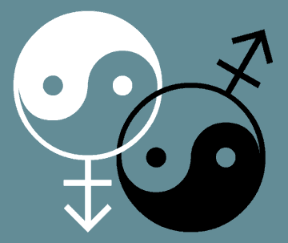

|

How to determine who should get married
Separation of Church and State, George. Remember that phrase and say it at least ten times a day.
- - - - - - - - - -
by Samuel Raider
 HE ISSUE of who should be allowed to get married is essentially a conundrum for some people who seem to have a hard time distinguishing between religion and government. I think it's pretty easy to explain, however. You see, some people are offended when people of the same sex get married. As I understand it, the idea violates some of their basic beliefs, and some people even take it as a sign of the end of civilization as we know it. They equate gay marriage with the fall of Rome, for some reason. Interesting that they don't draw any further parallels between Rome and modern times... Oh well, why bother looking at the whole picture when you can demonize those who scare you without the liability of critical and balanced thinking? HE ISSUE of who should be allowed to get married is essentially a conundrum for some people who seem to have a hard time distinguishing between religion and government. I think it's pretty easy to explain, however. You see, some people are offended when people of the same sex get married. As I understand it, the idea violates some of their basic beliefs, and some people even take it as a sign of the end of civilization as we know it. They equate gay marriage with the fall of Rome, for some reason. Interesting that they don't draw any further parallels between Rome and modern times... Oh well, why bother looking at the whole picture when you can demonize those who scare you without the liability of critical and balanced thinking?
But, to me, there's really no issue here. There's religion and there's government. And there's a little concept called freedom.
Let's look at it from the religious perspective. Now, there are various versions of Christianity in this country. They are free to practice their religion -- and in fact seem to be the "preferred" choice of those currently in power. So they are all right. Then you have... let's see, Jews, Muslims, Buddhists, Hindus, Sikhs and a whole host of other, less well known religions.
Now we are all afraid of Muslims these days -- at least some Muslims. I think it's safe to say that most of us are afraid of terrorists who are also Muslim. Mostly, I'm sad that they are so angry and that they turn to violence. I'd much prefer peaceful resolution. But I think we agree that terrorists, under any religious banner, should not get married. But terrorists do not represent a whole people or religion. More generally, George W. is very afraid of Muslims from countries like Afghanistan, Pakistan, Iran and Iraq, but he doesn't seem too worried about those nice Saudis, even if they do fund and train terrorists and treat women like slaves. They are the good Muslims.
What about Jews? Well, they killed Christ, didn't they? That seems to be an old refrain that's getting some renewed airplay. Look. Not one person today killed Christ. Jew or Roman or even Christian. Maybe the Buddha killed Christ. The fact is, you can't visit the wrath of two thousand years ago on people living today. If Jesus died for your sins, then be grateful. Jesus also preached peace and love in some very clear language. Read the Sermon on the Mount some time. Pay attention to his message in addition to his torture and death. Oh, and maybe pay attention to the Resurrection, some time, as well. There's a message in there somewhere, and it isn't all about hanging on a cross...
Sorry. I digress. Even if you believe that Jews killed Jesus, this country still allows them to get married, and hopefully we can all agree to get along, and if I were Jewish, I figure I would not kill Jesus if he came back. I'd be delighted and curious. I imagine he'd straighten the whole mess out and answer a lot of questions. I'm not sure he'd be delighted with all that has been done in his name, however.
Once again, I digress... My point is that there are lots of religions. Some of them can't tolerate gay people. Some don't really discriminate. But we, as a country, are supposed to accept all people, regardless of their race and religion. If the Catholic Church does not want to sanctify gay marriage, that's between the church and its flock. It has nothing whatsoever to do with the government.
There is a concept we like to call, "Separation of Church and State." It's a really good doctrine. It means that, even though our country was founded by puritanical refugees from Britain, we won't impose our religious biases on the governance of the country. We are all free to worship as we please. And we are free of government sponsored religious intolerance, persecution and legislation. It's so very simple. The government has no business meddling in a religious issue. None. Period. George W. Bush is flat out wrong to be playing president and violating this most fundamental code.
You know, as an aside, I was thinking about George W. the other day -- unfortunately, I think of him often -- and the image that came to mind was a spoiled rich boy whose father gave him the presidency to play with. The sad part of it is that, being just a little boy, he really doesn't mean to hurt people or do an incredibly inept job or destroy the environment or alienate most of the world... or even steal elections. Well, maybe he did mean to do that... He does like to dress up in costumes. What kid doesn't? I don't think he picked all those monsters around him, either... the ones who really run the show. He is, quite simply, just a little boy, and he really shouldn't have been given the presidency gift in the first place. But there you go. Enough people voted for him to make it easy enough to fix the rest in Florida. And lots of people still buy his act. I don't know what they are thinking or if they are paying any real attention to what's going on in this country, but as long as there's something as important as gay marriage to get upset about, we don't need to worry about the real crimes being committed under our noses, or the fact that the whole Bush agenda is nothing more than a giant power grab that makes the rich richer, the powerful more entrenched, and the rest of us disenfranchised and stuck on a treadmill that our corporate masters hope we will not find a way to stop.
But I was talking about the issue of gay marriage. It's such a ridiculous issue that I find myself migrating toward more fundamental issues. And, like everything else these days, this issue will lose steam and become a back burner item. But the damage is done. Bush has further divided our country -- one of his most demonstrable talents. He has gotten enough publicity to seriously suggest a Constitutional amendment. An amendment to our Constitution that takes away the freedom of a specific group of citizens, based on religious principles. Let's see. Take away rights. Based on religion. I can't imagine anything less compatible with our Constitution. If this doesn't reveal Bush as a dangerous lunatic or at least a willful child, I don't know what does. Our Bill of Rights and our Constitution are among the world's greatest manifestos of freedom and equality. Sadly, it took us almost 100 years to extend our principles to slaves, and even longer to enfranchise women. But we did learn, slowly. Now, some people want to go backward. Instead of recognizing the rights of all people, they now want to start taking rights away. Wrong. That's not what our country is about. And they are mixing religion into it. Big bad no no...
So what is marriage?
Modern marriage is really two things. One, it is an optional religious ceremony presided over by a religious representative and sanctified by that religion. Two, it is a required civil contract that is enforced by the government. I don't exactly understand why it is both these things, but that is the way it is.
So you have choice when it comes to the religious side of it. Being married in a Catholic cathedral or a Jewish synagogue or naked in a forest with a Druidic priest or priestess makes no difference, as long as the person marrying you has some kind of state license in addition to their religious credentials. And they need that state license so that you can then register your marriage and make it a legal, civil event. This allows you to operate within the legal community as a legal entity. As far as I can tell, it's not too difficult to get the civil license to marry people.
So, once the government recognizes that you are married, the particular religion that performed the ceremony becomes irrelevant as far as the state is concerned. You are married, in the civil sense, and that's it. Nobody ever asks you afterward if you were married in a Jewish ceremony or a Zoroastrian hoe-down. Of course, you can, as far as the state is concerned, go to a judge, sea captain, Elvis impersonator or other secular agent and get married without the benefit of a religious connotation to the marriage. That's still a legal marriage as far as the government is concerned.
But suddenly, all this is ok only if those getting married comprise one female and one male partner. Suddenly, if the marriage involves two of the same gender, then it's wrong and there should be a Constitutional amendment "protecting" the definition of marriage as one man, one woman. Lots of people are, however, ok with the idea of a civil union -- essentially a non-religious marriage that isn't called a marriage but operates pretty much the same way from the state's point of view. As if the word marriage really mattered all that much. Can you really believe that we are going through all this to protect a word? And not even a word as holy as "freedom" or "equality." And what about the "pursuit of happiness?" Isn't that also one of our basic rights?
Ok. I don't see anything really wrong with a civil union, but neither is there anything wrong with a marriage between two men or two women who love each other, as long as the religion they happen to subscribe to is ok with it. If the Catholic Church is against gay marriages and a gay couple happens to think of themselves as Catholics, well then that's between them and their church. It has nothing at all to do with the United States Government. Nothing at all.
Once again...
Marriage = religious union = freedom of individual worship = not government
Marriage = freedom of expression = pursuit of happiness = basic human right
Separation of Church and State, George. Remember that phrase and say it at least ten times a day.
Government has no business legislating marriage. That's the province of religion. Government can grant certain civil rights and privileges to married couples. That's their only purpose in the deal, and as near as I can figure, it's essentially about controlling people and their money -- but that's a whole different issue.
Final word... gay marriage is a non issue. If you don't like it, turn the other cheek.

|